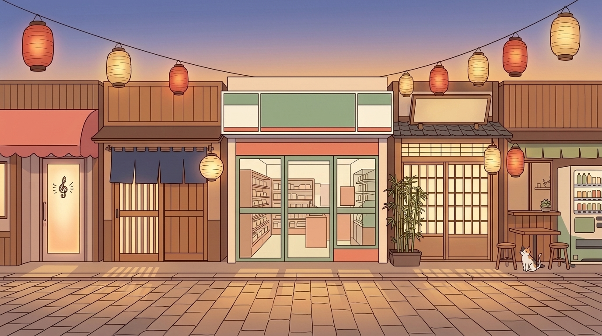

UNI
R
VERSOS
🏮 Yokocho
🔥 Ofensiva
✦
0
XP
🏮 Noite suave
🔊 Som: ON

🎤
カラオケ
Karaokê
🍣
回転寿司
かいてんずし
Sushi
🏪
コンビニ
Konbini
👘
雑貨屋
ざっかや
Lojinha
🍵
喫茶
きっさ
Café
🏮
🌇
🟦
🎋
🐾
🥤
焼き鳥
🧳
Você
✕
入
はい
る
→
🔥 Ofensiva do Beco:
Você · 🔥 0d
Modo solo (ao logar, as alunas se veem andando aqui!)
👣 Arraste no celular para passear pelo beco · Toque nos objetos ou nas colegas!
🧳 Mala Express
👥 Jogos em Dupla
🎭 Ensaio (role play)
📊 Meu Gráfico
✦ 喫茶 · Cantinho Social
🍵 Café Yokocho
✕ Fechar
Deixe um recado rápido em japonês na mesinha do beco ou ouça quem passou por aqui.
Enviar